Introduzione al Machine Learning
Crash course teorico-pratico
Docente: Paolo Galeone
Su di me
Computer engineer | Head of ML & CV @ ZURU Tech Italy | Machine Learning GDE
- Blog: https://pgaleone.eu/
- Github: https://github.com/galeone/
- Twitter: @paolo_galeone
- Author: Hands-On Neural Networks with TensorFlow 2.0
Organizzazione
Prima parte
- Cos'è il machine learning e l'importanza del dataset
- Le reti neurali come modello di apprendimento universale
- Apprendimento come processo di ottimizzazione
- Discesa del gradiente per ricercare la soluzione
- Ottimizzatori
Seconda parte
- Introduzione a TensorFlow 2.0
- Usare i Keras model (Sequential e Functional API) per definire modelli deep
- TensorFlow Datasets e tf.data API
- Il TensorFlow custom training loop a la GradientTape
- Classificare immagini con reti completamente conesse
Terza parte
- Reti Neurali Convoluzionali (Convolutional Neural Networks)
- Migliorare il classificatore di immagini usando le CNN
- Introduzione all'object detection
- Implementazione di un classificatore e localizzatore di oggetti
Agenda
- 28/09 prima parte + seconda parte
- 05/10 terza parte
Prima Parte
- Cos'è il machine learning e l'importanza del dataset
- Le reti neurali come modello di apprendimento universale
- Apprendimento come processo di ottimizzazione
- Discesa del gradiente per ricercare la soluzione
- Ottimizzatori
Cos'è il Machine Learning?
Il Machine Learning è un ramo dell'intelligenza artificiale in cui vengono definiti algoritmi con lo scopo di estrarre informazioni signficative dai dati
Applicazioni
Le applicazioni del Machine Learning sono infinite. Siamo circondati da applicazioni intelligenti e probabilmente non ce ne rendiamo nemmeno conto.
Sistemi di raccomandazione
Plate Recongnition
Face Detection
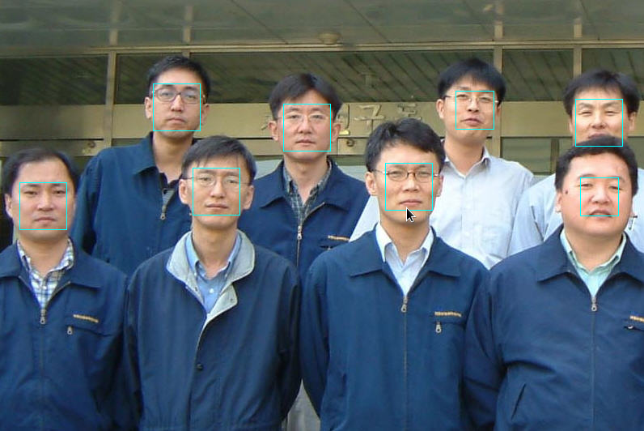
Quando usiamo il nostro spartphone per inquadrare una persona, in real time vediamo la face detection in azione.
Ma come è possibile che questo accada?
Per un computer un'immagine non è altro che un insieme ordinato di vettori 3D (componenti RGB) posti uno accanto all'altro.
Apprendere dai dati
L'algoritmo (modello) usato dall'applicazione è stato allenato per identificare un pattern (il volto).
Il modello ha appreso, dopo aver visto migliaia di volte migliaglia di esempi etichettati, che ad un certo input corrisponde quello che noi chiamiamo volto.
Gli algoritmi di questo tipo appartengono alla famiglia dell'apprendimento supervisionato.
Tassonomia degli algoritmi di ML
- Apprendimento supervisionato
- Apprendimento non supervisionato
- Apprendimento semi-supervisionato
In questo corso tratteremo esclusivamente gli algoritmi di apprendimento supervisionato.
Ogni categoria di algoritmi ha le sue peculiarità, ma tutti condividono lo steso obiettivo: apprendere dai dati.
Per questo motivo, i dati sono la parte più importante di ogni algoritmo di Machine Learning.
Il dataset
Un dataset altro non è che una collezione di dati:
- è il numero di elementi del dataset
- è l'esempio (immagine, tupla di numeri, ...)
- è la label associata all'esempio
Il dataset è l'insieme totale dei dati a nostra dispozione.
Un algoritmo di ML deve "osservare" i dati molte volte per poter apprendere quali caratteristiche (features) presenti nei dati sono utili per risolvere il task (e.g. classificazione).
Question time: Possiamo usare lo stesso dataset per allenare il modello e misurare le performance del modello stesso?
Dataset Split
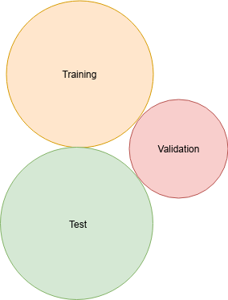
- Training set: il subset da usare per allenare il modello
- Validation set: il subset da usare per misurare per performance del modello durante il training
- Test set: il subset da non toccare mai durante le fasi di training e validation, ma da usare solo per la valutazione delle performance finale.
Epoche di training
Gli algoritmi di ML sono algoritmi iterativi che lavorano sul training set.
Ogni volta che il training set è stato osservato completamente dall'algoritmo, diciamo che è passata un'epoca.
Spazi n-dimensionali
Gli spazi n-dimensionali sono un modo di modellare dataset contenenti esempi con n attributi ognuno.
Ogni esempio è completamente descritto dai suoi n attributi .
Un'utile intuizione è quella di pensare ad ogni singolo esempio del dataset come se fosse una riga in un dataset, dove gli attributi sono le colonne.
ESEMPIO: un immagine 28 x 28 in scala di grigi ha esattamente 28 x 28 = 284 distinti attributi (colonne).
Il concetto di dimensione si sviluppa nel momento in cui iniziamo a pensare agli esempi come se fossero punti in uno spazio n-dimensionale univocamente identificati dai loro attributi.
Pensando ai dati in questo modo, è possibile calcolare relazioni geometriche come la distanza.

Tensori
I tensori sono lo strumento matematico che permette di trattare in maniera omogenea strutture dati con diverse dimensionalità.
Senza scendere nei dettagli, abbiamo che:
- Uno scalare è un tensore
- Un vettore è un tensore
- Una matrice è un tensore
Nella pratica possiamo pensare ad un tensore come ad un array n-dimensionale o una lista.
Come vedremo dopo, TensorFlow usa il tensore per rappresentare ogni tipo di dato.
Ogni tensore ha tre caratteristiche principali:
- Un rango (rank): il numero di dimensioni del tensore
- Una forma (shape): la descrizione completa della forma del tensore, strettamente legata al rango.
- Un tipo (dtype): interi, float, ...
Ad esempio:
- un tensore con rango 0 ha shape
()(scalare) - un tensore con rango 1 ha shape
[D0](una lista diD0numeri) - un tensore con rango 2 ha shape
[D0, D1]) (una matriceD0 x D1`) ...
Iris Dataset
Per comprendere al meglio il concetto di dimensione, useremo il noto "Iris Dataset".
Il dataset contiene 3 classi, e 50 esempi per classe. La classe è il tipo di fiore. Gli attribtui sono tutti continui, ad eccezione per la classe/label.
- lunghezza del petalo (cm)
- altezza del petalo (cm)
- lunghezza del sepalo (cm)
- altezza del sepalo (cm)
- classe: setosa, versicolor, virginica

Question time: quante dimensioni ha questo dataset?
Avendo ogni esempio 4 attributi (più l'informazione della classe) è già difficile visualizzare tutta l'informazione assieme sullo stesso grafico.
Come visualizziamo 4 dimensioni sullo stesso grafico? E invece 284?
Per un dataset a bassa dimensionalità come l'Iris, possiamo ricorrdere ad una tecnica manuale di visualizzazione dei dati, che che ci permette di avere un'idea del dataset con il quale stiamo lavorando.
Come prima cosa, assegniamo un colore distinto ad ogni diversa classe:
- Setosa = blu
- Versicolor = verde
- Virginica = rosso
E successivamente visualizziamo le relazioni tra le features a coppie.
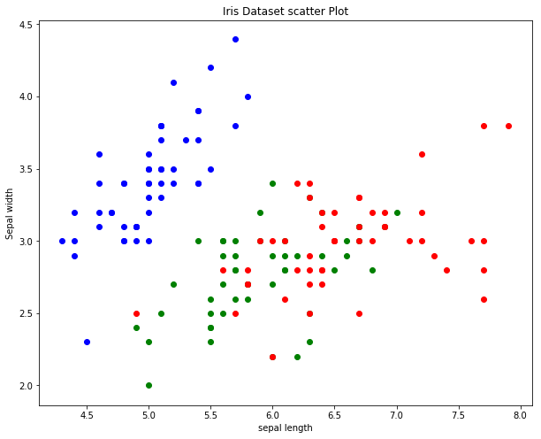
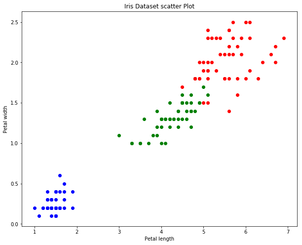
Quest'ultimo grafico, mostra che esistono tre partizioni naturali (cluster) nel dataset e che per trovarle possiamo usare i soli due attributi "petal widht" e "petal lenght".
Ma tutto questo è stato fatto in maniera manuale e "visiva".
L'obiettivo degli algoritmi di classificazione è di apprendere autonomamente quali sono le feature (caratteristiche, dimensioni) discriminative, così da apprendere una funzione in grado di classificare correttamente elementi apparteneti a classi differenti.
Apprendimento Supervisionato

Modelli parametrici e non parametrici
È possibile classificare gli algoritmi di machine learning (supervisionato e non) in base alla presenza di un numero fisso (parametrici) o meno (non parametrici) di parametri apprendibili all'interno del modello.
- Algoritmi non parametrici: sono una maniera classica di affrontare il problema di classificazione/regressione. Il più comune algoritmo di non parametrico è il k-NN (k-Nearest-Neighbours).
- Algoritmi parametrici: hanno bisogno di un processo di train durante il quale modificano il valore dei loro parametri per adattarsi al dataset e risolvere il task.
L'algoritmo k-NN
L'algoritmo si basa sul concetto di distanza.
Per classificare un nuovo elemento (punto p), abbiamo bisogno di misurare la distanza di p rispetto a ogni elemento del dataset.
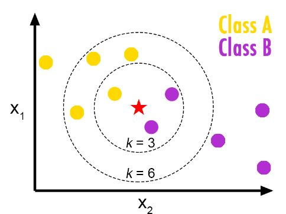
- Quando k-NN è applicato a problemi di classificazione, il punto p viene classificato in base al voto dei suoi k vicini
- Quand k-NN è applicato a problemi di regressione, l'output dell'algoritmo è la media dei k-NN.
Modelli parametrici
Dato un valore di input e la sua label associata , definiamo modello parametrico la funzione dove è l'insieme dei parametri da cambiare durante la fase di training per "adattarsi ai dati" (fit the data).
L'esempio più semplice ed intuitivo di modello parametrico è la regressione lineare.
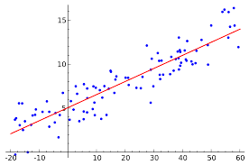
Questo modello tenta di modellare la relazione tra due variabili (dipendente y, e indipendente x), "fittando" l'equazione di una retta ai dati osservati.
I parametri sono
Question time: che assunzioni stiamo facendo sui dati?
Il metodo iterativo, standard de-facto, per trovare i valori dei parametri è il metodo dei minimi quadrati.
Questo metodo calcola la linea che "meglio fitta" i dati, minimizzando la somma dei quadrati delle distanze tra i punti e la linea stimata all'iterazione precedente.
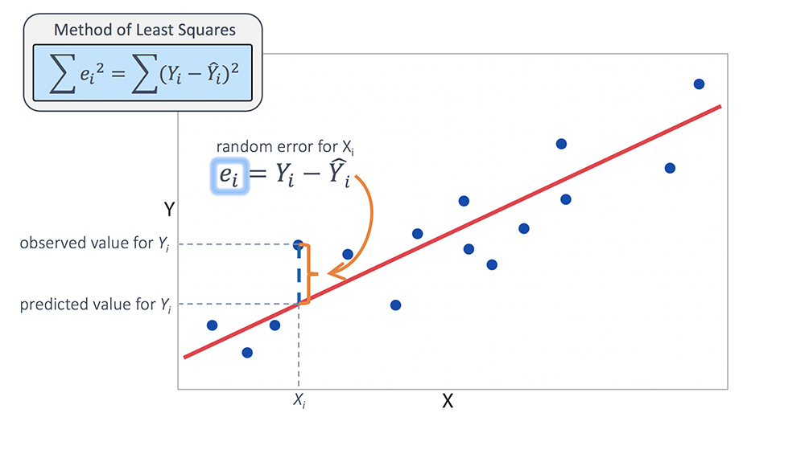
L'obiettivo degli algoritmi di apprendimento supervisionato, è quello di iterativamente "aggiustare" i parametri in modo tale che modelli correttamente il fenomeno osservato.
Modellare un fenomeno usando un modello parametrico con una equazione nota è OK quando abbiamo la certezza che i il fenomeno abbia un andamento lineare e le variabili da considerare siano solo 2.
Ma se il numero di variabili (le dimensioni del dataset) è molto maggiore, e non abbiamo alcuna informazione su come i dati si dispongano (se linearmente, o esponenzialmente, o formino cluster, ...) usare un modello di questo tipo non porta a buoni risultati.
In questi casi, modelli con un numero molto grande di parametri come le reti neurali possono essere usati, in quanto questi modelli sono approssimatori universali in gradi di modellare ogni funzione, e quindi apprendere una funzione incognita che fitti il dataset.
Usare modelli con molti parametri può sembrare la soluzione perfetta, ma nella pratica, avere modelli molto flessibili può portare a risultati patologici come l'overfitting.
Condizioni patologiche

Misurare le performance: le metriche
Misurare le performance di un algoritmo di apprendimento supervisionato durante la fase di validazione e test è parte essenziale di ogni pipeline di ML ben fatta.
- È possibile misurare le performance del modello su ogni split del dataset
- Al termine di ogni epoca è raccomadabile misurare le performance sul dataset di train e validation
- Le metriche misurate sui diversi dataset vanno rappresentate sullo stesso grafico
- Le differenze tra le performance di train e validation ci indicano se il modello soffre di condizioni patologiche.
Gli algoritmi di apprendimento supervisionato hanno l'enorme vantaggio di avere all'interno del dataset le label e le metriche usano le label per esprimere "quanto bene" l'algoritmo sta apprendendo.
La prima metrica presentata è l'accuratezza (accuracy).
Accuracy
L'accuracy è esattamente quello che la parole stessa esprime: quanto accurato il modello è stato nel predire il risultato corretto.

Question time: l'accuracy è una buona metrica se il dataset è sbilanciato?
Un dataset è sbilanciato quando il numero di elementi per classe è molto diverso
Confusion matrix
È una rappresentazione tabellare delle performance di un classificatore.
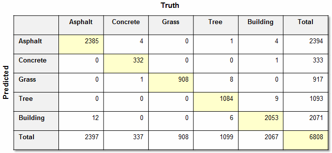
La matrice di confusione non è una metrica, ma è uno strumento necessario per calcolare altre metriche.
La matrice di confusione contiene:
- TP (True Positives): Tutte le istanze di A classificate come A
- TN (True Negatives): Tutte le non istanze di A non classificate come A
- FP (False Positives): Tutte le non istanze di A classificate come A
- FN (False Negatives): Tutte le istanze di A non classificate come A
Precision
La precision è un numero in che misura quanto è accurato il classificatore.
Recall
La recall è un numero in che misura la percentuale di elementi correttamente classificati, sul totale degli elementi di quella classe.
Mean absolute error
MAE (errore medio assouto) è la media delle differenza assolute tra il valore (classe, o valore numerico) reale e quello predetto.
È una metrica applicabile anche ai classificatori, ma usualmente viene usata per i regressori.
Il suo valore è tra .
Mean squared error
MSE (errore quadratico medio) è la media delle differenze al quatrato tra il valore reale e quello predetto.
Il suo valore è tra .
Metriche come MAE e MSE esprimono una relazione diretta tra valori reali e valori predetti.
Questa relazione è, solitaente, anche l'obiettivo che vogliamo minimizzare durante il processo di ottimizzazione.
Loss function
La funzione che lega i dati osservati e quelli predetti, è detta loss function (funzione perdita).
L'obiettivo di ogni algoritmo di machine learning espresso come algoritmo di ottimizzazione (come vedremo a breve) è quello di minimizzare la perdita.
Dopo questa introduzione ai concetti fondamentali del Machine Learning, possiamo dedicarci al modello più diffuso ed utilizzato, le reti neurali, e comprendere come il processo di apprendimento di questo modello parametrico viene effettuato.
Reti Neurali
Neuroni biologici e artificiali
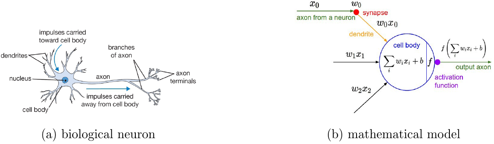
- Dendriti: numero di input che il neurone accetta; dimensione del dato di input.
- Sinapsi: i pesi associati ai dendriti. Questi sono i parametri che cambiano durante la fase di training.
- Assone: è il valore di output, dopo essere stato processto dal nucleo.
- Nucleo: (prossima slide)
Nucleo
Una funzione che lega l'input con i pesi associati alle sinapsi. Per simulare il comportamento del neuorne biologico (attivarsi con determinati stimoli di input), il nucleo è modellato usando una funzione non lineare .
Non linearità
Un percettrone (perceptron), è una rete neurale composta da diversi neuroni lineari.
Un pereptron può classificare esempi in uno spazio D-dimensionale se e solo se gli esempi sono linearmente separabili (apprendere un iperpiano decisionale).
La non linearità, invece, trasforma l'iperpiano in una generica ipersuperficie.
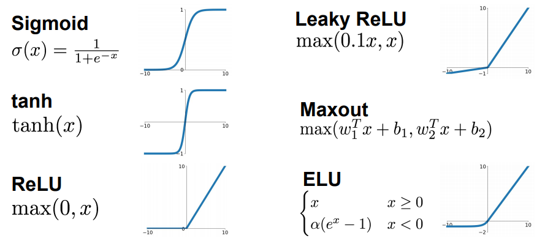
Il bias
Spesso dimenticato, ma di fondamentale importanza, è il termine che permette di apprendere (nel caso lineare) iperpiani non centrati nell'origine.
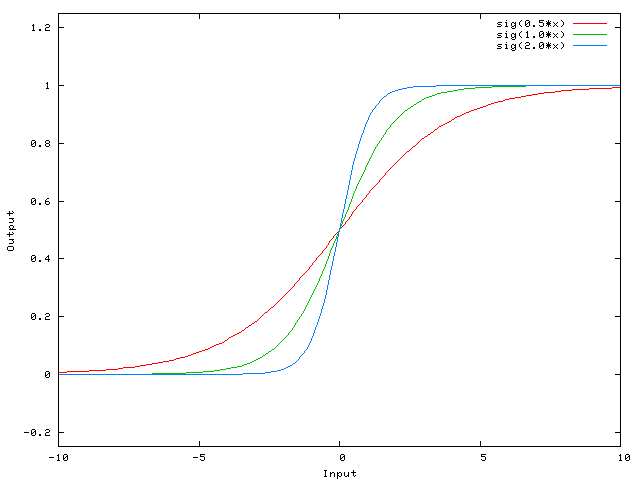

Perché le reti neurali?
A differenza dei metodi tradizionali, le reti neurali sono estremamente flessibili.
Un singola rete neurale (input -> rete -> output) è in grado al massimo di trovare una singola ipersuperfificie, e quindi apprendere un solo decision boundary.
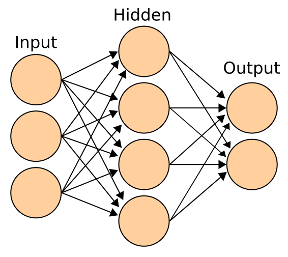
Mettendo in cascata (creando una rete deep) diversi layer di neuoroni, è possibile (layer dopo layer) trasformare e combinare i diversi confini decisionali appresi, fino all'apprendimento di una funzione in grado di separare correttamente i dati.
Importante
Le reti neurali sono approssimatori di funzioni universali.
Apprendiamo, quindi una funzione che può essere vista come una generica trasformazione da un dominio (ad una determinata dimensione), ad un altro (solitamente ad una dimensione ridotta).
Apprendere trasofmrazioni da uno spazio all'altro e molto potente in quanto permette di ridurre la complessità dei problemi, trasferendoli da un dominio altamente dimensionale ad uno bassa dimensionalità.
Reti complementamente connesse
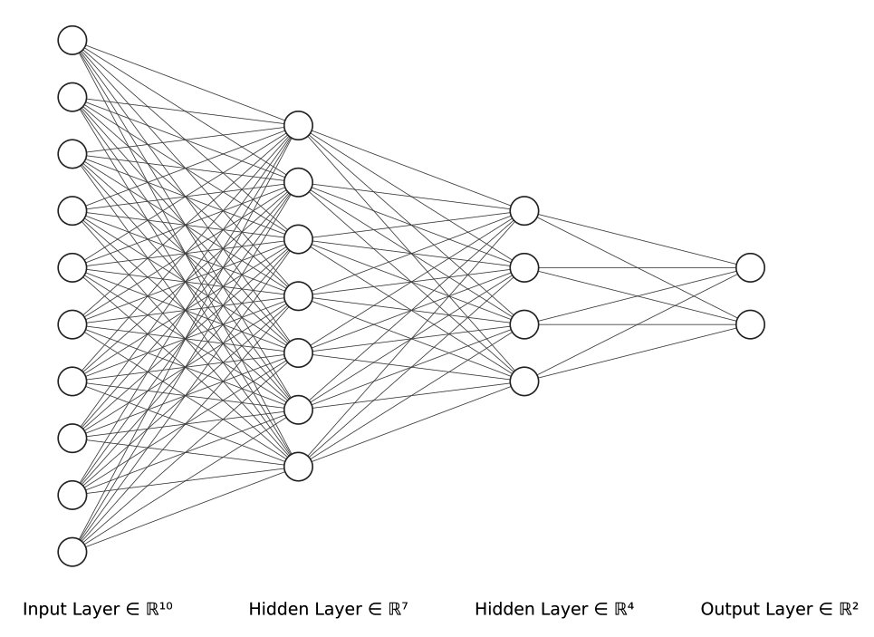
L'output di un layer complemtamente connesso che trasforma un input D-dimensionale in un valore M-dimensionale è dato da:
Ricapitoliamo
- Il dataset è composto da dati, che possono essere visti come punti in uno spazio D-dimensionale.
- Un percettrone è in grado di separare correttamente solo dati che sono linearmente separabili.
- Aggiungere la non linearità rende il percettrone in grado di separare dati non linearmente separabili, ma deforma il confine decisionale.
- Mettere in cascata (rete deep) più layer di neuorni, permette di ridurre la dimensionalità, e apprendere migliori confini decisionali.
- È possibile variare la topologia delle reti (come vedremo).
Dopo aver definito i dati e l'architettura: come possiamo allenare la nostra rete per apprendere la funzione incognita?
Apprendimento ed ottimizzazione
La loss function
È una funzione usata per mettere in relazione l'output del modello con la predizione desiderata.
Di loss function "standard" ne esistono diverse, ognuna delle quali influenza la qualità delle predizioni del modello.
Per un problema di classificazione su classi distinte, possiamo modellare la rete neurale come una funzione che dato un input D-dimensionale produce un vettore M-dimensionale di predizioni, in funzione dei suoi parametri .
Ottenere la label predetta a partire dal vettore M-dimensionale è banale:
Ma come possiamo specificare (dare in pasto alla loss function) la label presente nel dataset per il dato di input?
Si potrebbe usare direttamente il valore della label stessa (non fatelo).
Oppure si può codificare la label usando la rappresentazione 1-hot. (1-hot encoding).
La formulazione generale della loss function tra valore predetto e valore reale in codifica one-hot è:
Per un dataset di elementi, il valore della loss è il valore medio:
La formulazione della loss dipende dal problema, ma la più intuitiva (e frequentemente utilizzata) tra le loss è la distanza euclidea (L2 loss).
Ottimizzazione
La ricerca operativa ci offre metodi per trovare la soluzione di un problema di ottimizzazione dove la funzione da ottimizzare ha caratteristiche ben definite (e.g. è convessa).
Le reti neurali sono approssimatori universali, quindi non possiamo fare alcuna considerazione che sfrutti la geometria della funzione.
Di conseguenza...
Non è possibile usare i tradizionali metodi offerti dall ricerca operativa per ottimizzare (minimizzare) la loss function.
È dunque necessario procedere alla ricerca della soluzione in maniera iterativa, partendo da una soluzione iniziale e rifinendola ad ogni step (fase di train del modello).
Abbiamo due alternative per ricercare l'ottimo della funzione:
Perturbazioni casuali: si applica una perturbazione al set di parametri corrente, si valuta il valore della loss dopo aver applicato la perturbazione e se il valore è minore del precedente, si aggiornano i parametri.
Stima della direzione dell'aggiornamento: anziché generare un nuovo set di parametri in maniera causauale, è possibile guidare il processo di ricerca dell'ottimo nella direzione di massima discesa della funzione.
La soluzione iniziale del problema è il set di parametri della rete neurale.
Scelta della soluzione iniziale
Non esiste un unico modo di inizializzare i parametri, ma esisono due suggerimenti che ogni inizializzazione deve rispettare:
- Non inizializzare i parametri a zero: rende impossibile trovare una nuova soluzione usando gradient descent (vedi dopo)
- Rompere la simmetria: due hidden units (neuroni nello stesso layer) che condividono lo stesso input devono essere inizializzati con valori diversi.
Gradient Descent
Per una funzione in una variabie, l'operazione di derivata ci descrive il comportamento della funzione valutata in un intorno infinitamente piccolo centrato su .
La generalizzazione dell'operazione per una funzione a n-variabili è data dal gradiente:
Il gradiente indica la direzione lungo la quale la funzione cresce, quindi:
Batch Gradient Descent
La regola di aggiornamento dei parametri diventa dunque:
dove è il learning rate.
Il learning rate è un iperparametro e sceglierlo è difficile.
Mini-batch Gradient Descent
Anziché calcolare il valore della loss function su tutto il dataset (difficilamente applicabile nella realtà, quando i dataset sono enormi), la loss si calcola iterativamente su dei mini-batch (di cardinalità ).
.
Algoritmi di ottimizzazione
Esisono diversi algoritmi di ottimizazione, i quali differiscono per la regola di aggiornamento dei parametri.
- Vanilla Gradient Descent: (precedentemente spiegato), stima la direzione dell'aggiornamento usando il gradiente e applica aggiornamenti "grandi tanto quanto il learning rate".
- Momentum update: "limita" la dimensione dell'aggiornamento usando un termine di "attrito"
- E molti altri (la loro descrizione va oltre la complessità del corso).
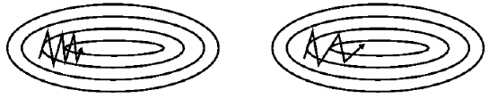

Per approfondire Algoritmi di ottimizzazione per il training delle reti neurali
Domande
- Dataset split: quali e perché.
- Cos'è un epoca?
- Differenze tra modelli parametrici e non parametrici.
- Descrivi l'algoritmo k-NN.
- Overfitting e underfitting: sono condizioni patologiche, perché? Quando si verificano?
- La matrice di confusione è una metrica?
- Cosa misurano precision e recall?
- Descrivi la struttura (usando la formula) di un neurone artificiale.
- Perché la non linearità è importante?
- Il termine di bias, perchè è necessario inserirlo?
- Reti neurali completamente connesse: cosa accade layer-dopo-layer all'input?
- Loss function: perché è necessaria? Cosa misura?
- Soluzione iniziale al problema di minimizzazione: che regole seguire?
- Descrivi la regola di aggiornamento "vanilla", nel caso batch e mini-batch.
Introduzione a TensorFlow 2.0 e TensorFlow Datasets
- Colab: https://bit.ly/2lno7O5
Terza Parte
- Reti Neurali Convoluzionali (Convolutional Neural Networks)
- Migliorare il classificatore di immagini usando le CNN
- Introduzione all'object detection
- Implementazione di un classificatore e localizzatore di oggetti
Convolutional Neural Networks
Le reti neurali convoluzionali (CNN) sono i blocchi fondamentali di ogni applicazione di machine learning moderna. Sono utilizzate per:
- image classification
- object detection
- object detection and classification
- semantic segmentation
- generative models (audio/video/image)
- ...
Image classification
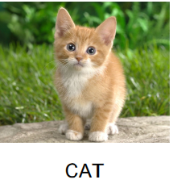
Object Detection and Classification
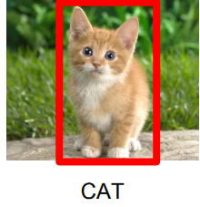
(anche singolarmente)
Semantic Segmentation
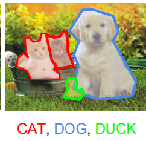
Generative Models

Tutte queste (e molte altre) applicazioni sono possibili grazie all' apprendimento di filtri (kernel) convoluzionali.
Per poter capire perché è bene apprendere questi filtri, è prima necessario capire l'operatore di convoluzione e come questo viene usato nella computer vision tradizionale.
L'operazione di convoluzione
In teoria dei segnali l'operazione di convoluione è usata per studiare la rispotsa di un sistema fisico quando un determinato segnale è applicato al suo input.
Senza dilungarsi nella teoria, quel che è necessario sapere è che:
- L'operazione di convoluzione tra due segnali (funzioni), produce una nuova funzione
- La convoluzione è sia discreta che continua
- La convoluzione mono-dimensionale può essere generalizzata al caso a più dimensioni
- L'operazione di convoluzione è commutativa
Convoluzione discreta
Dati due segnali discreti e , l'operazione di covoluzione è calcolato come:
Nel caso discreto a due dimensioni (immagini), l'operazione di convoluzione si definisce come:
- è l'immagine di input
- è il filtro convoluzionale quadrato, di lato
- è il pixel di output nella posizione .

In computer vision "tradizionale" i Kernel sono definiti manualmente, in modo tale da estrarre determinate caratteristiche (features) di interesse dall'immagine di input.
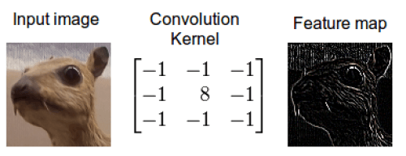
A kernel (filtri) diversi, corrispondono diverse features estratte.
Nella formula della convoluzione è possibile notare come l'operazione sia effettuata per ogni posizione
In realtà, ci sono due parametri non mostrati nella formula che controllano come l'operazione di convoluzione viene effettuata: lo stride (orizzontale e verticale) ed il padding.
Questi due parametri altro non sono che il numero di pixel da "saltare" quando si fa scorrere il kernel sull'immagine di input (stride), e da aggiungere come cornice all'input (padding).
Se l'immagine è quadrata, ed applichiamo lo stesso stride , si può calcolare la dimensione dell'output della convoluzione come:
- è il padding applicato
- è il lato del kernel convoluzionale (solitamente indicato come )
- , la dimensione lato dell'immagine di input

Convoluzione tra un immagine , con uno zero padding ed un kernel , usando stride
Fin'ora abbiamo considerato solo immagini a singolo canale (scala di grigi), ma l'operazione di convoluzione può essere effettuata tra volumi di profondità arbitraria (immagini RGB, oppure volumi di qualsiasi profondità D).
Convoluzioni tra volumi
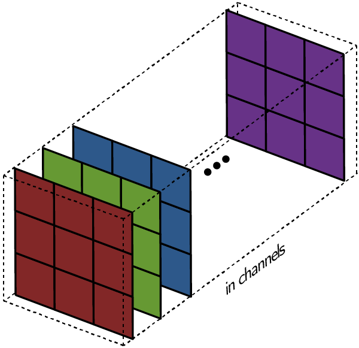
Un'immagine può essere vista come un volume di immagini in scala di grigi, messe una dietro l'altra.
Allo stesso modo, i kernel convoluzionali possono essere volumi di filtri della stessa profondità dell'immagine di input.
Input C canali Singolo kernel a C canali
Data un immagine RGB, la convluzione con un kernel :
- La convoluzione di ogni canale per il rispettivo filtro a profindità 1
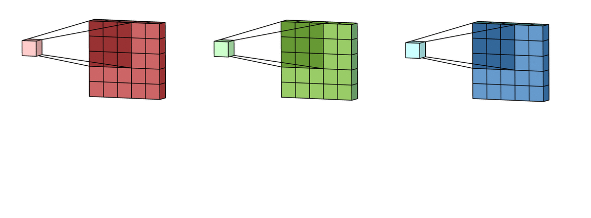
- La somma delle feature map estratte
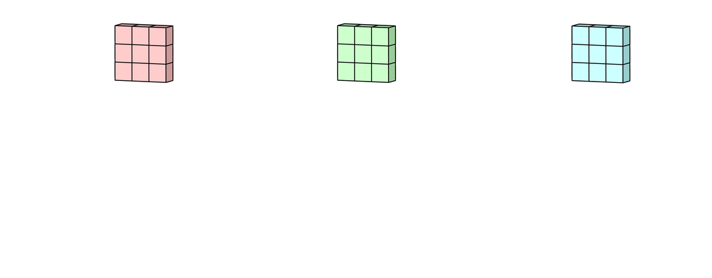
- Se è presente un termine di bias, viene aggiunto alla feature map risultante.
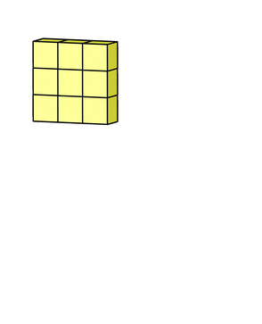
Quindi la formula per la convoluzione tra una immagine ed un filtro è:
Il risultato è quindi una singola feature map (somma delle singole) la cui risoluzione è la stessa che si sarebbe ottenuta con una convoluzione su singolo canale.
Reti neurali convoluzionali: l'idea
Anziché definire manualmente il kernel (filtro) per estrarre specifiche features dall'immagine
rendiamo il kernel apprendibile e facciamo sì che il processo di apprendimento, modifichi i parametri del filtro, in modo tale che l'operazione di convoluzione tra esso e l'input estragga features significative per risolvere il task (specificato dalla loss function).
Apprendere filtri convoluzionali
Apprendere filtri convoluzionali consiste nel definire un numero arbitrario N di filtri da apprendere ed eseguire N convoluzioni tra volumi, in maniera indipendente.
Ogni filtro convoluzionale è un neurone che osserva una regione locale dell'immagine (sulla quale scorre).
Ogni convoluzione produce una feature map, chiamata activation map.
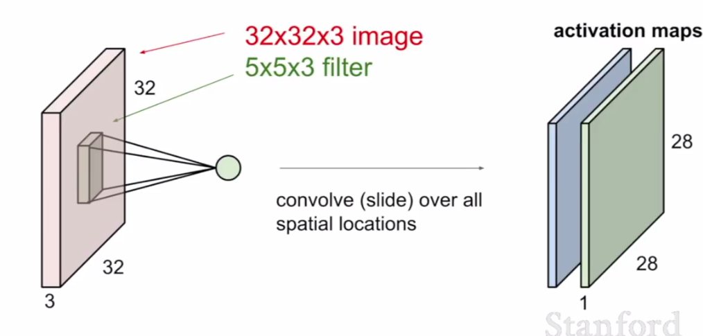
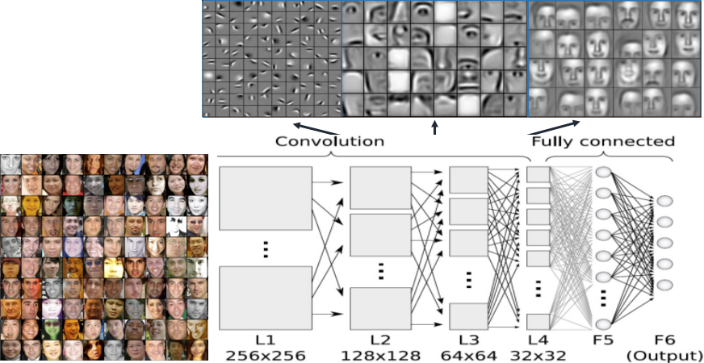
Ogni layer convoluzionale apprende la capacità di estrarre features via via più astratte all'aumentare della profondità della rete, combinando le features elementari estratte dai layer precedenti.
Classificazione ed estrazione di features
Essendo a tutti gli effetti una rete neurale, possiamo definire l'architettura in modo tale da estrarre un numero arbirario di features (a bassa dimensionalità) ed utilizzarlo come input di una classificatore (rete FC).
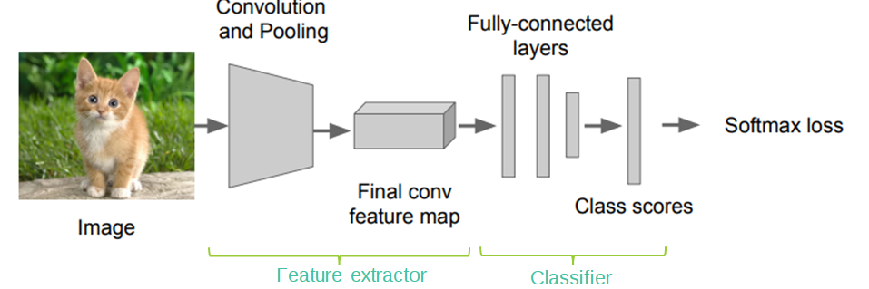
Definendo le architetture a blocchi (blocchi di feature extraction e classificazione indipendenti) possiamo pensare di riutilizzare feature extractor allenati da altri su dataset di grandi dimensioni.
Persumibilmente questi feature extractor hanno appreso la capacità di estrarre features "buone".
Transfer Learning & Fine Tuning
Il riutilizzo del feature extractor puù avvenire in due modi:
- Transfer Learning: il feature extractor viene scaricato (modello pre-trainato) e viene usato solo per estrarre le features e diventare l'input della testa di classificazione
- Fine Tuning: il feature ectractor viene rifinito durante il processo di train, quindi non sarà solo l'input della testa, ma diventerà parte dell'architettura da allenare.
Localizzazione
Individuare la bounding box che racchiude un oggetto all'interno di una immagine può essere fatto usando una rete neurale convoluzionale che rispetta la struttura appena definita.
Infatti, avendo a dispozione un dataset di immagini contenenti un oggetto annotato e le coordinate della bounding box, possiamo definire una architettura in grado di regredire le coordinate.
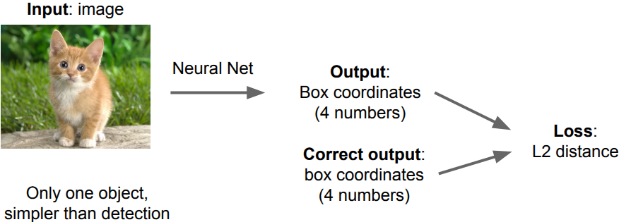
Localizzazione e classificazione
È un sottoinsieme del task (più complesso) di object detection.
Supponiamo di avere in scena solo un oggetto ed una bounding box da regredire.
È possibile definire una rete neurale con due teste:
- Regression head: per la regressione delle coordinate (più essere class agnostic o class specific)
- Classification head: per la classificazione dell'oggetto
È possibile allenare simultaneamente la rete a risolvere entrambi i task: questo è un esempio di multi-task learning.

Metriche
Il task di classificazione e localizzazione richiede la misura di due metriche in simultanea:
- La precisione di classificazione, cioè tutte le metriche valide per un classificatore (come l'accuracy)
- La precisione per la detection
Misurare la precisione per la detection, in realtà richiede di trattare il problema come un problema di classificazione binaria.
Intersection Over Union
Per decidere se una bounding box predetta è a tutti gli effetti una "detection" è possibile utilizzare l'intersection over union (delle aree):
Il suo valore è tra 0 (nessuna detection) ed 1 (overlap completo).

Per decidere se una bounding box predetta è da considerare una detection, si fissa una soglia di IoU e vengono considerate come detection solo quelle predizioni di bounding box che superano la soglia.
Così facendo ci ritroviamo nel caso di una classificazione binaria, in cui, però, possiamo solo avere:
- True positives: detection
- False positives: detection errate (non passano la soglia)
È impossibile avere False negatives o true negatives, dato che non esistono i negativi.
Precision
Per il motivo precedentemente introdotto, l'unica metrica misurabile è la precision
Domande
- L'operazione di convoluzione che risultato produce?
- La convoluzione tra una immagine ed un kernel/filtro convoluzionale, come viene effettuata?
- Quali sono le fasi della convoluzione tra volumi?
- Apprendimento della capacità di estrarre features mediante convoluzioni: come?
- È possibile regredire coordinate usando un feature extractor di una rete (CNN) allenata in classifcazione?
- Differenza tra transfer learning e fine tuning
- Al variare della profondità della rete, le features estratte come sono?
- Per regredire le coordinate di una bounding box: quanti neuroni di output e che loss usare?
- Spiegare l'Intersection Over Union
- Spiegare i true positives, true negatives, false positives e false negatives quando facciamo object localization e detection.
Introduzione all'object detection + TensorFlow Hub
- Colab: https://bit.ly/2lUTeAM